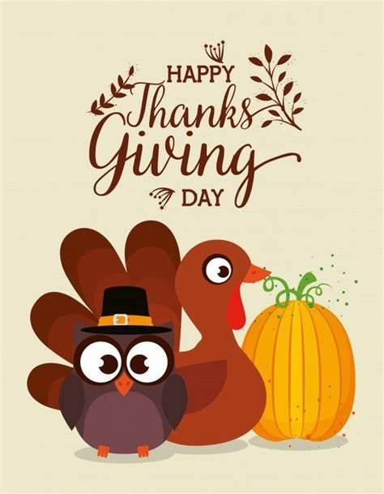
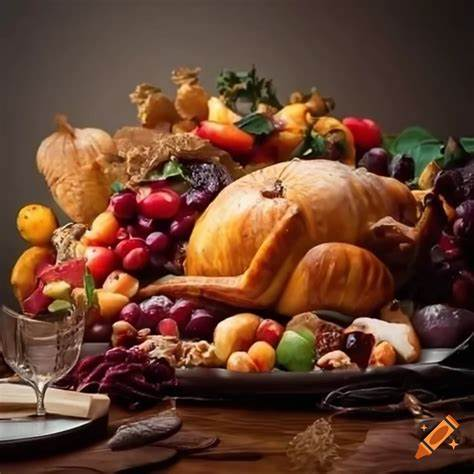
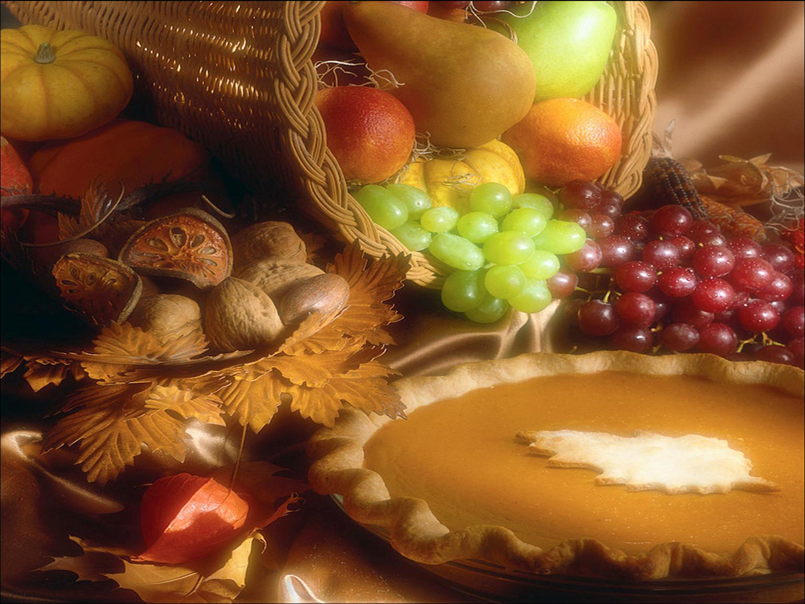
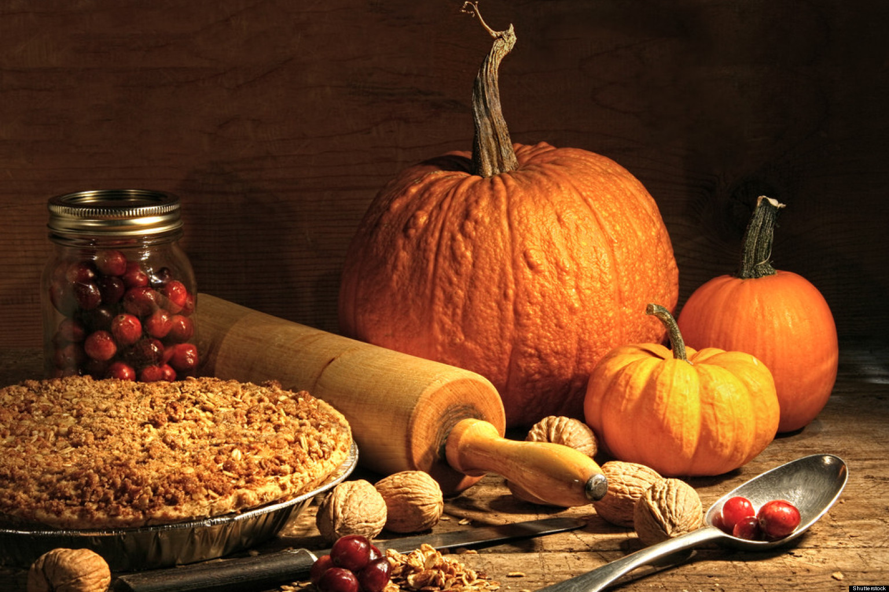

O feriado de Ação de Graças americano começou como uma festa de ação de graças nos primeiros dias das colônias
americanas há quase quatrocentos anos. Em 1620, um barco com mais de cem peregrinos cruzou o Oceano Atlântico
para assentá-los no Novo Mundo.

De acordo com registros históricos, o Dia de Ação de Graças ocorreu pela primeira vez nos Estados Unidos no ano
1621, em Plymouth, Massachusetts. A festa foi organizada por peregrinos e fundadores da vila para comemorar o
fim do período do inverno e, também, como forma de celebrar a boa colheita de milho.
O Dia de Ação de Graças, ou Thanksgiving, é comemorado principalmente nos Estados Unidos e no Canadá, como uma
data para expressar gratidão pelas bênçãos do ano. A festa, que tem raízes nos primeiros colonizadores
norte-americanos, é marcada por reuniões familiares e celebrações religiosas.


Nos Estados Unidos as pessoas costumam viajar para passar essa comemoração em família. O Dia de Ação de Graças é
celebrado com um jantar, onde são servidos pratos típicos feitos à base de abóbora, batata-doce, purê de batatas,
molho de cranberry e o tradicional peru, além dos cookies e tortas de maçã e nozes.
Cerca de 50 milhões de perus são consumidos no Dia de Ação de Graças nos Estados Unidos, motivo pelo qual a data é
popularmente conhecida como “Turkey Day” (Dia do Peru). Assim, anualmente, o presidente dos Estados Unidos
participa de uma cerimônia em que "perdoa" dois perus, poupando-os do abate.
O Dia de Ação de Graças foi eleito dia festivo nos Estados Unidos pelo então presidente Abraham Lincoln, em 1863,
mas apenas em 1941 a data passou a ser feriado nacional.
No Brasil, o Dia de Ação de Graças não é muito popular, mas costuma ser comemorado pelas famílias de origem
norte-americana ou canadense, pelo fato de essa data ser muito importante nos Estados Unidos e também no Canadá.
A data também é comemorada no Brasil nas escolas de línguas, aproveitando a oportunidade para divulgar a cultura
americana.
Assim como nos Estados Unidos, o Dia de Ação de Graças é comemorado no Brasil na 4ª quinta-feira de novembro. No
Canadá, o Dia de Ação de Graças é comemorado na 2ª segunda-feira do mês de outubro, mais cedo, em decorrência da
época das colheitas.
A data foi instituída no Brasil através da Lei n.º 781, em 1949. A comemoração foi sugerida por Joaquim Nabuco,
quando este era embaixador do Brasil nos Estados Unidos.
